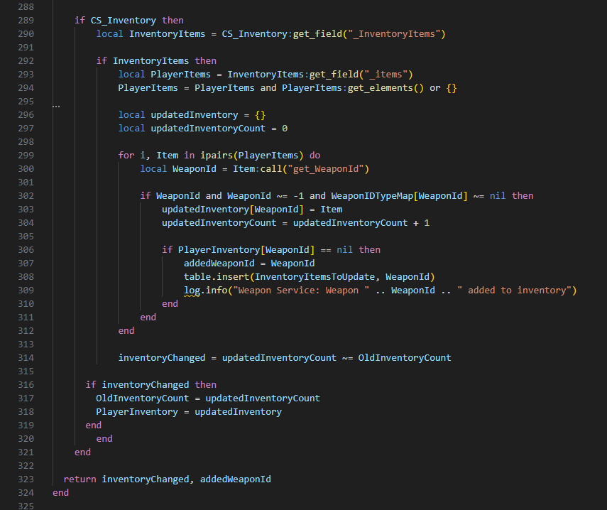
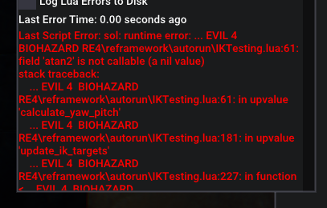

My coding journey began in earnest in early 2023 with the release of Resident Evil 4 Remake. Previously, I had dabbled with JSON and XML files for modding purposes, but the RE4 Remake introduced me to Lua code, opening a whole new world of possibilities.
Determined to enhance my gaming experience, I dove into learning Lua and the intricacies of the RE Engine and REFramework. It was grueling work, especially with a development environment that was far from ideal. The process involved locating specific fields or properties within the game’s internal structure and writing scripts to access them. With no IDE debugging available, it was a relentless cycle of trial and (runtime) error. However, after successfully accessing the desired fields without any runtime errors, I felt a profound sense of achievement.
